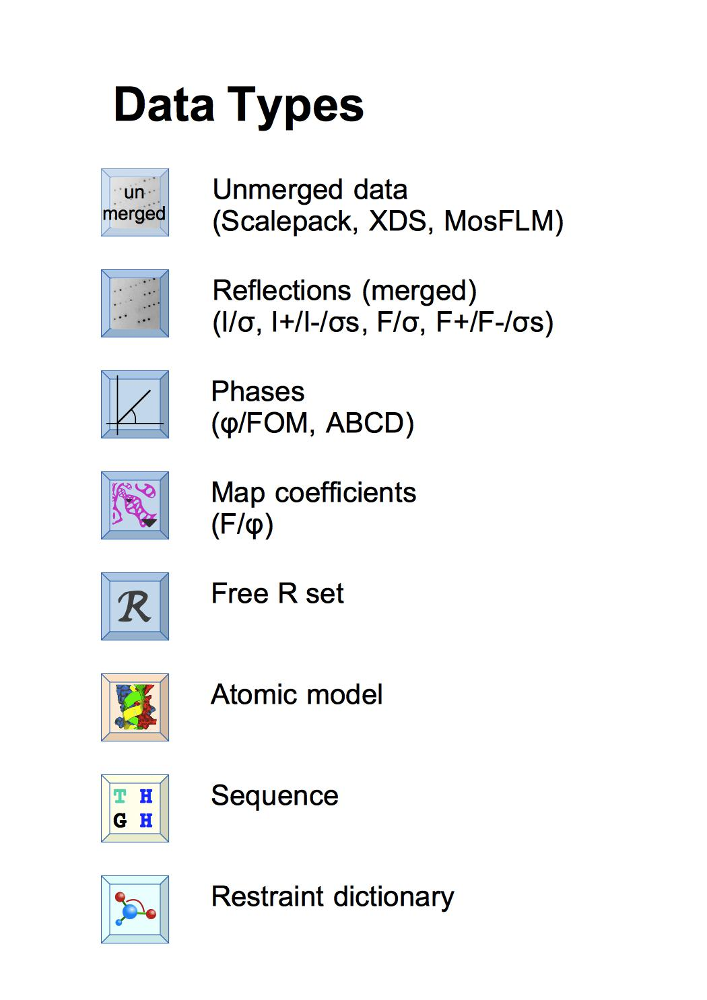
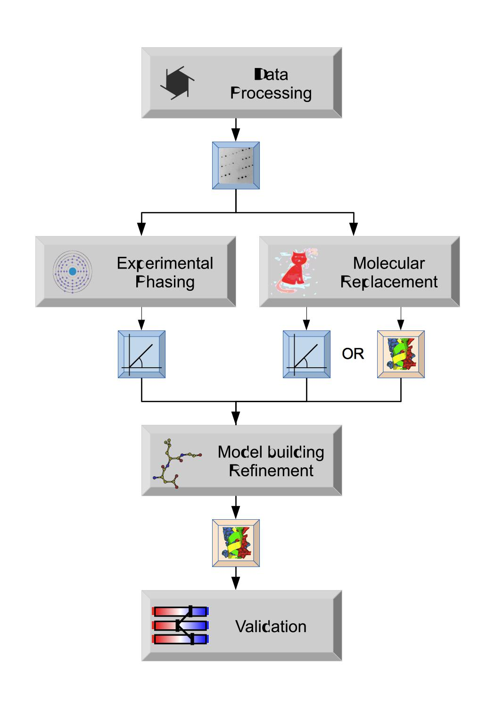
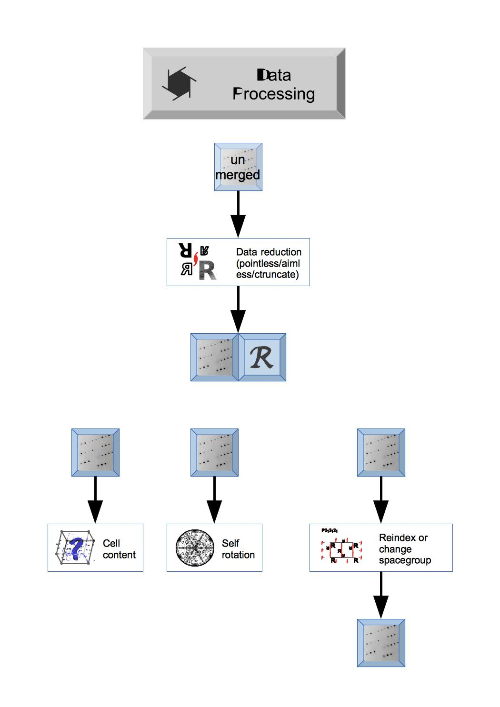
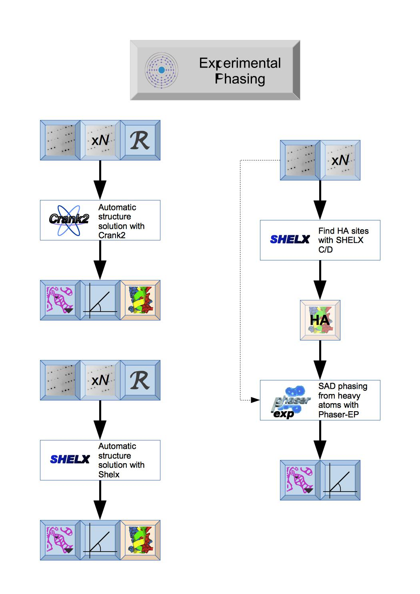
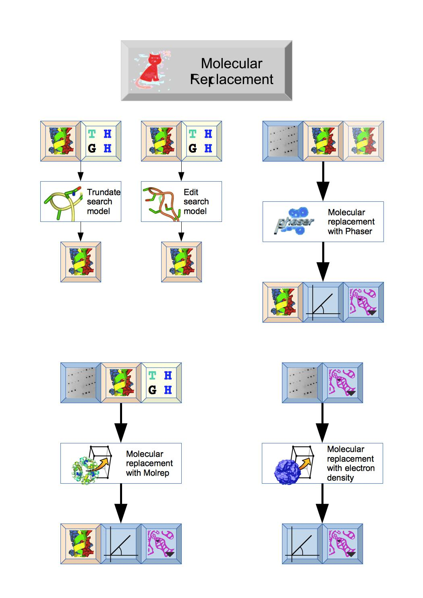
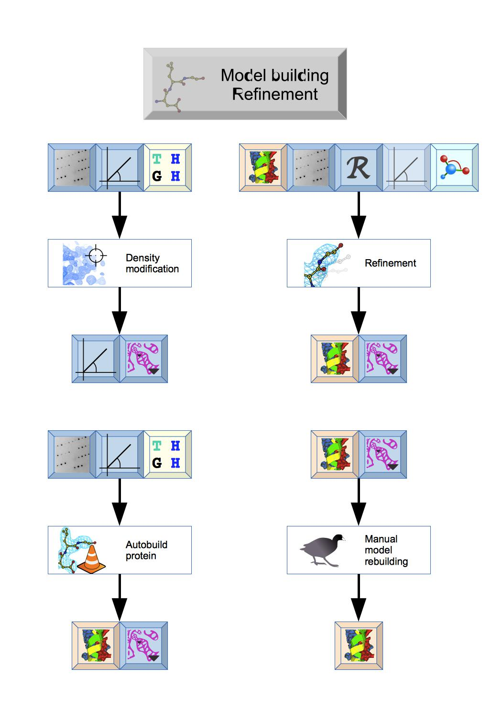

CCP4i2 — Overview of Structure Solution with CCP4i2¶
{kind=link}

Data types¶
Within CCP4i2 each instance of data is a file in our standard format - if you have data in non-standard format it will be converted on import. The reflection data is no longer all in one ‘monster’ MTZ file but split into ‘mini’ MTZ files containing either Reflections, Phases, Map coefficients or Free R sets - more info. The key data describing the model are Sequence and Atomic model; the Restraint dictionary defines ideal structure geometry for model refinement - more info.
The different types of data have distinctive icons - where these appear in input guis, reports, or on the Job list you can use the icons to drag-and-drop the data around the gui and right-mouse click on the icon gives a menu with options including to view the data.

Overview¶
The key stages in structure solution are shown - the initial data processing produces merged Reflection data that can be used in Molecular replacement (if you have similar known model structure) or Experimental phasing to solve the structure and give either initial Phases or an initial Atomic model that can be used for further Model building and refinement. The final refined Atomic model can then be validated, analysed and submitted to the Protein Databank.
These key stages correspond to the modules on the Task menu of the gui (though there are additional modules there).

Data reduction and analysis¶
The first steps in CCP4i2 will depend on the status of your experimental data: if you are starting from experimental image data you will need to Integrate X-ray images to create unmerged reflection data or you may have data that has been processed by XIA2 at a synchrotron and the data and details of XIA2 run can be imported by Import integrated X-ray reflections module.
The unmerged Reflection data is merged by a Data reduction task that also provides important analysis of the data. Unmerged data can be entered here in a variety of formats and the output will be merged Reflection data and Free R set. The Data reduction and analysis module has other tools to analyse the Reflection data.

Experimental phasing¶
There are two totally automated experimental phasing tasks: CRANK2 that uses a variety of programs and can continue to model building and refinement and Shelx that uses the various Shelx programs. Both produce Phases and initial Map coefficientsand initial Atomic model.

Molecular replacement¶
The Molecular replacement module includes tools to truncate or edit the search model prior to molecular replacement and then two different programs: Phaser or Molrep that should output initial Phases, Map coefficients and Atomic model.

Model building and refinement¶
This module has a variety of tasks: Density modification can be used to improve initial Phases and Autobuild protein will quickly build or extend a protein structure. The structure can then be improved by cycles of Refinement and Manual model building. The Ligand pipeline can be used to generate initial coordinates and ligand geometry data for refinement.